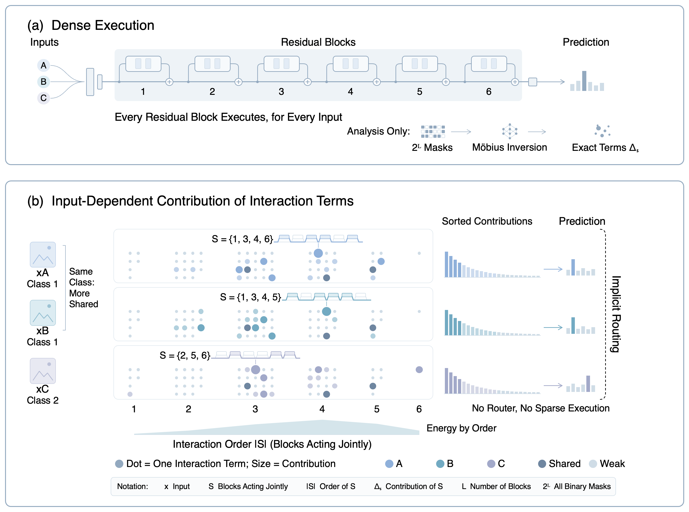
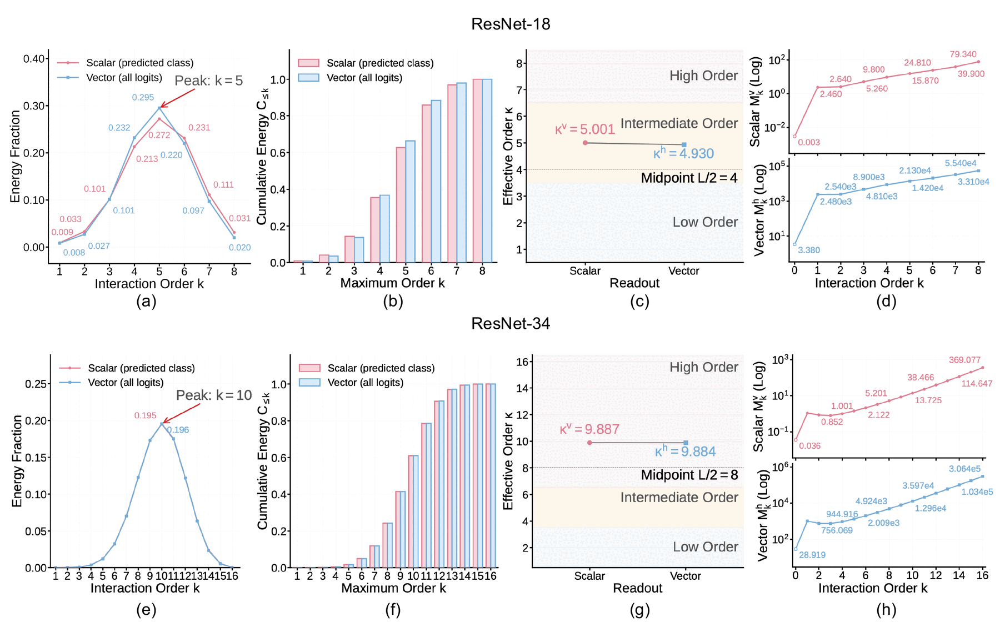
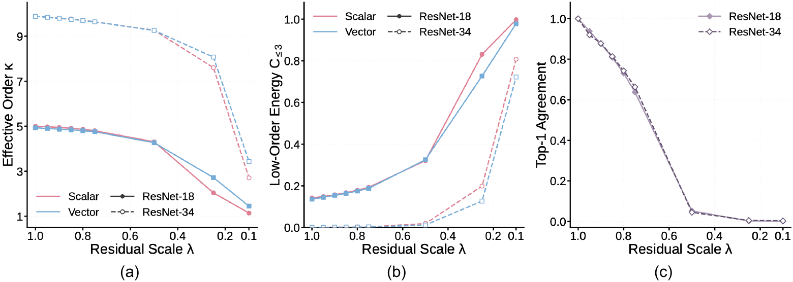
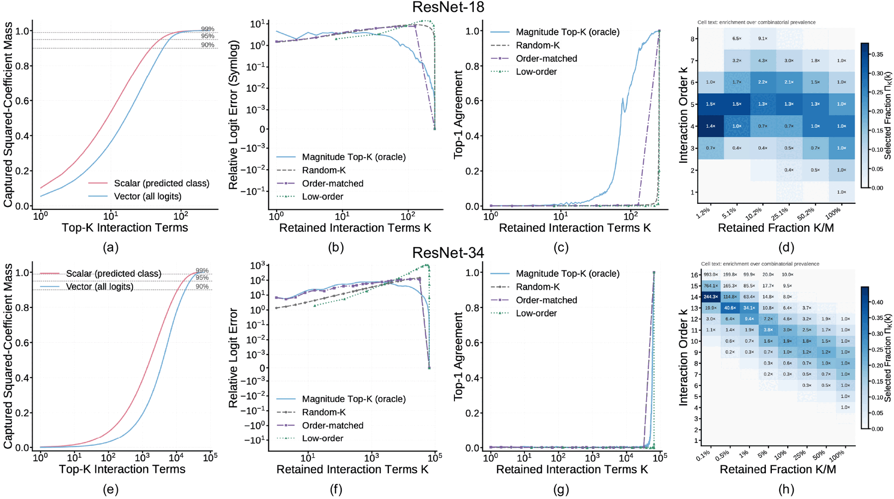
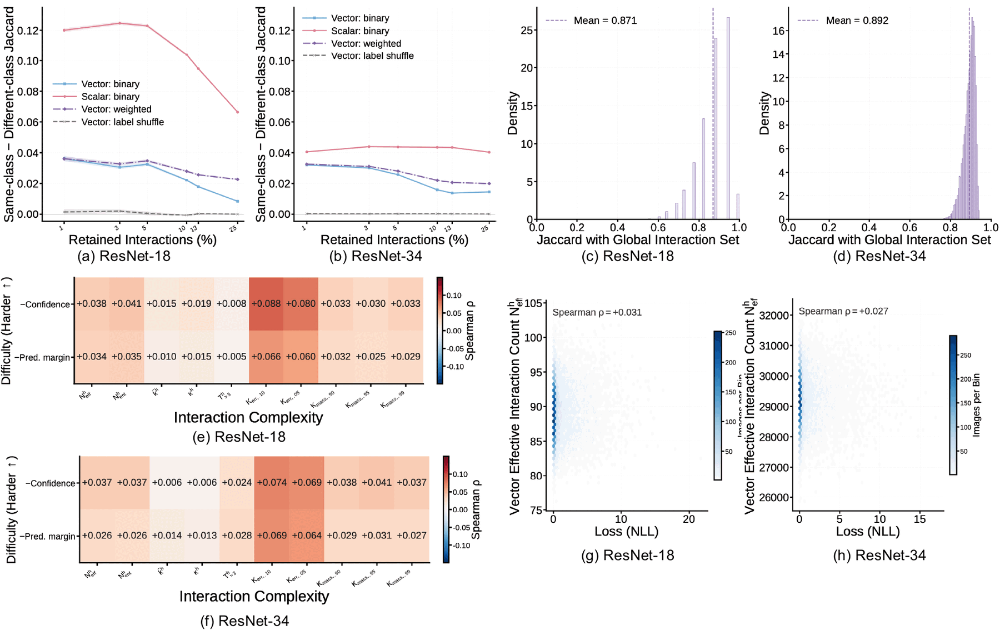

From dense residual execution to input-dependent interaction experts
TL;DR. A trained ResNet is a set function over binary residual-branch masks. Möbius inversion decomposes it exactly into residual corrections and higher-order interactions. On ImageNet-pretrained ResNet-18 and ResNet-34, interaction mass peaks at intermediate orders, concentrates on a sparse core of interactions, and the dominant interactions change with the input and its class. Routing can emerge at the level of functional contribution, with no router and no sparse execution.
Abstract
Residual networks execute every block for every input, yet their functional contributions need not be input independent. We formulate a trained ResNet as a set function over binary residual-branch masks and apply Möbius inversion to decompose its output exactly into individual residual corrections and higher-order interactions. For smooth residual stacks, we show that each fixed $k$-way interaction scales as $\mathcal{O}(\lambda^k)$ under residual scaling.
Exhaustive analysis of ImageNet-pretrained ResNet-18 and ResNet-34 reveals that interaction mass peaks at orders five and ten, respectively, rather than at low orders. Reducing the residual scale shifts both spectra toward lower orders, but also changes model predictions. The interaction coefficients are concentrated in magnitude but not hard sparse, and prediction-preserving sparsity weakens with depth. Crucially, the dominant interactions vary across inputs and predicted classes around a shared global core, while their overall complexity changes little with sample difficulty.
These results show that dense ResNets implement an implicit form of soft routing: every block is executed, but different inputs rely on different residual interaction experts. Routing can therefore emerge at the level of functional contribution without an explicit router or sparse execution.
Framework
Residual-mask responses and Möbius interactions

Figure 1. From dense residual execution to input-dependent interaction experts. (a) A standard ResNet executes every residual block for every input and contains no explicit router. For analysis, we apply binary gates to its $L$ residual branches, evaluate all $2^L$ masks, and use Möbius inversion to decompose the output exactly into interaction coefficients $\Delta_S$, one for each branch subset $S$. These gates are analytical interventions and do not alter ordinary dense inference. (b) Each dot represents an interaction, positioned by its order $|S|$ and sized by its predicted-class contribution $|\Delta_S v_x|$. The dominant terms combine a shared global core with input-dependent, class-structured variation, which we call implicit soft routing.
The coefficients add back to the full-network output. The Top-$K$ terms $\mathcal A_K(x)$ by $|\Delta_S v_x|$ are the input's implicit residual experts.
Every residual-branch mask is enumerated: $2^8=256$ for ResNet-18 and $2^{16}=65{,}536$ for ResNet-34
1Observation
Masked-subnetwork outputs are not additive path contributions
If each masked subnetwork were an independent path, simple aggregations of their outputs should recover the full logits. Raw, mean and centered sums all fail, even after optimal rescaling. The Möbius coefficients, computed from the same masked evaluations, recover the logits to floating-point precision (relative error $8.5\times10^{-7}$ on ResNet-18).
Method
Norm ratio
Rel. error ↓
Scaled error ↓
Cosine ↑
Top-1 agree ↑
ResNet-18 · N = 10,000
Raw subset sum $A^{\mathrm{raw}}_x$
79.400
79.200
0.961
0.222
0.006
Mean subset output $A^{\mathrm{mean}}_x$
0.310
0.977
0.961
0.222
0.006
Centered subset sum $A^{\mathrm{ctr}}_x$
77.400
77.200
0.959
0.229
0.006
Möbius $\sum_S\Delta_S h_x$
1.000
0.000
0.000
1.000
1.000
ResNet-34 · N = 1,000
Raw subset sum $A^{\mathrm{raw}}_x$
18,852.327
18,851.887
0.889
0.440
0.025
Mean subset output $A^{\mathrm{mean}}_x$
0.288
0.910
0.889
0.440
0.025
Centered subset sum $A^{\mathrm{ctr}}_x$
17,750.219
17,749.760
0.879
0.459
0.024
Möbius $\sum_S\Delta_S h_x$
1.000
0.000
0.000
1.000
1.000
2Observation
Interaction mass concentrates at mid-to-high orders
In ResNet-18, both readouts peak at $k=5$: orders 4–6 hold 71.6% and 74.7% of scalar and vector energy, while orders up to three contribute only 14.2% and 13.6%. ResNet-34 peaks at $k=10$, with effective orders $\kappa^v=9.887$ and $\kappa^h=9.884$, above the midpoint $L/2=8$. Short structural paths do not imply low-order functional interactions.

Figure 2. Residual interaction-order spectra for scalar predicted-class and vector-logit readouts. Top: ResNet-18; bottom: ResNet-34. From left to right: normalized interaction energy $\widetilde E_k$, cumulative low-order energy $C_{\le k}$, effective interaction order $\kappa$, and mean per-interaction energy $M_k$ on a logarithmic scale.3Observation
Residual scaling lowers interaction order but changes predictions
Scaling every residual branch by $\lambda$ at inference time, without retraining, shifts mass toward lower orders as the $\mathcal O(\lambda^k)$ bound predicts: for ResNet-18, $\kappa^v$ falls from 5.001 to 1.144 as $\lambda$ goes from 1 to 0.1. The predictions move too: top-1 agreement drops to 73.1% at $\lambda=0.8$ and 5.2% at $\lambda=0.5$.

Figure 3. Inference-time residual-scaling sweep on pretrained ResNet-18 ($N=10{,}000$) and ResNet-34 ($N=1{,}000$), without retraining. Solid and dashed lines denote ResNet-18 and ResNet-34. (a) Effective interaction order $\kappa$ for the scalar and vector readouts. (b) Cumulative low-order energy $C_{\le3}$. (c) Top-1 agreement of each scaled model with its prediction at $\lambda=1$.4Observation
Residual interactions form a sparse but long-tailed expert representation
For ResNet-18, Top-64 holds 25.1% of the dictionary but captures 93.64% of the vector coefficient mass; Top-128 captures 99.71% and preserves 87.66% of predictions. Prediction reconstruction needs a broader support than mass recovery, revealing a decision-relevant tail, especially in ResNet-34. Magnitude selection clearly beats random, order-matched and low-order selection.

Figure 4. Top-$K$ interaction concentration and reconstruction. ResNet-18 on top, ResNet-34 on the bottom. (a,e) Captured squared coefficient mass. (b,f) Relative logit error. (c,g) Agreement with the full-model predictions. (d,h) Order composition and enrichment of the vector Top-$K$ supports. Most coefficient mass is concentrated in a sparse interaction core, while a long tail progressively refines the final prediction.5Observation
Expert supports share a global core with class-dependent variation
At every retained fraction, same-class pairs share more Top-$K$ experts than different-class pairs, and label shuffling reduces the gap to nearly zero (Fig. 5a,b). Peak class gaps for predicted-class supports are 0.125 and 0.044 for ResNet-18 and ResNet-34. At about 13% retention, vector supports stay close to the global support, with mean Jaccard 0.871 and 0.892 (Fig. 5c,d). Inputs do not select disjoint experts; they reweight a shared core.
6Observation
Interaction complexity is largely insensitive to input difficulty
Across all difficulty and complexity metrics, the largest Spearman correlation is 0.088 for ResNet-18 and 0.074 for ResNet-34 (Fig. 5e,f). NLL is nearly uncorrelated with the effective interaction count $N^h_{\mathrm{eff}}$, with $\rho=0.031$ and 0.027 (Fig. 5g,h). Input dependence changes which interactions dominate rather than how many are engaged.

Figure 5. Input dependence and difficulty sensitivity of residual interaction supports, on 10,000 ImageNet validation images. (a,b) Same-class minus different-class similarity for scalar, vector and weighted interaction signatures, with label shuffling as a null control. (c,d) Input-wise Jaccard similarity with the global vector interaction set at about 13% retention. (e,f) Spearman correlations between label-free difficulty measures and vector interaction complexity. (g,h) Negative log-likelihood versus the vector effective interaction count $N^h_{\mathrm{eff}}$.
BibTeX
@article{yan2026doresnetsroute,
title = {Do ResNets Route? Sparse Interaction Experts in Residual Networks},
author = {Yan, Liang and Chen, Siying and Chen, Kaijie and Li, Bo and Zhang, Jinghao and Miao, Mu},
journal = {arXiv preprint},
year = {2026}
}